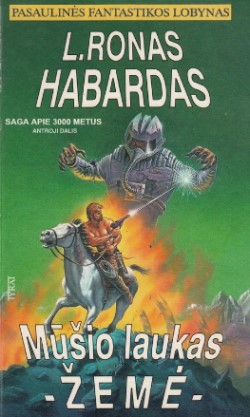

„Mūšio laukas - Žemė. Pirmoji dalis” - Kaunas - „Tyrai” - 1996.
Serija: Pasaulinės fantastikos lobynas.
Antraštė: Saga apie 3000 metus.
Iš anglų kalbos vertė Laima Veršulienė;
412ps. ; 21cm;
tiražas - ????egz. ;
kieti viršeliai.
ISBN 9986-797-13-6.

„Mūšio laukas - Žemė. Antroji dalis” - Kaunas - „Tyrai” - 1996.
Serija: Pasaulinės fantastikos lobynas.
Antraštė: Saga apie 3000 metus.
Iš anglų kalbos vertė Jūratė Andrulionienė;
397ps. ; 21cm;
tiražas - ????egz. ;
kieti viršeliai.
ISBN 9986-797-43-8.
„Mūšio laukas - Žemė. Trečioji dalis” - Kaunas - „Tyrai” - 1997.
Serija: Pasaulinės fantastikos lobynas.
Antraštė: Saga apie 3000 metus.
Iš anglų kalbos vertė Jūratė Andrulionienė;
395ps. ; 21cm;
tiražas - ????egz. ;
kieti viršeliai.
ISBN 9986-797-44-6.